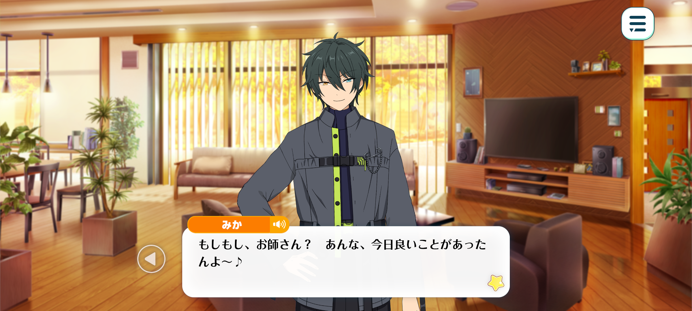
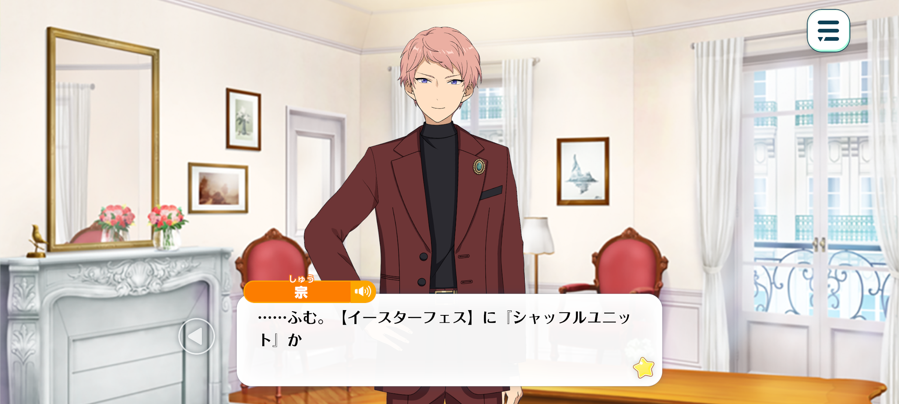
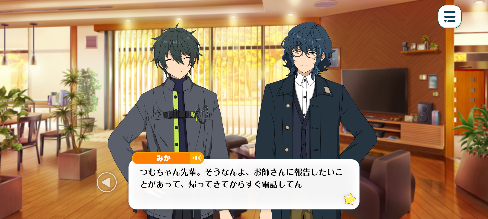
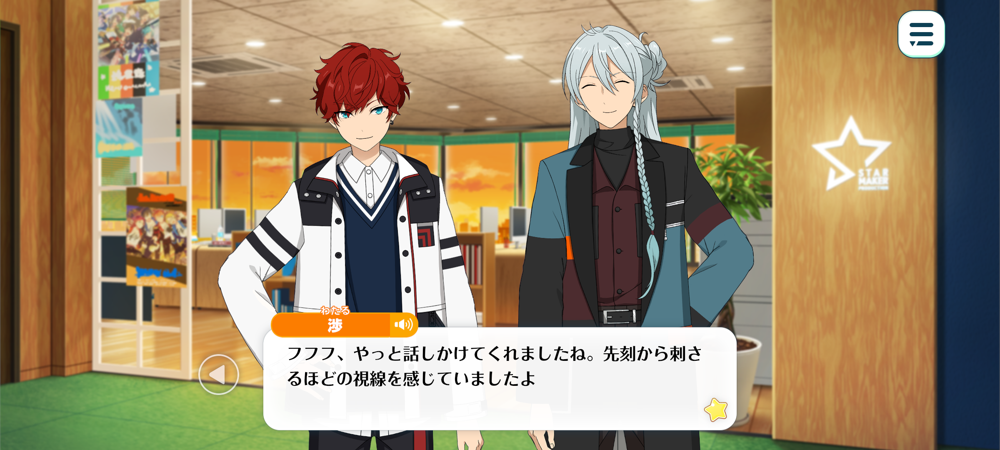
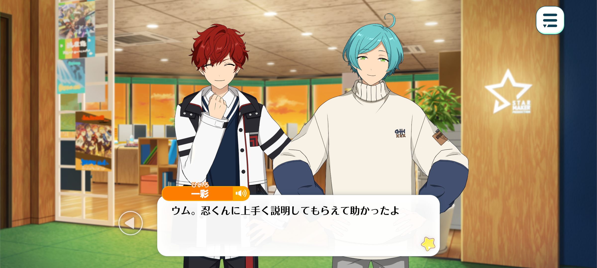

Easter To You
Careful 1


Season: Winter

Mika: Hello, Oshi-san? Somethin’ real good happened today~♪
…..Eh? You can tell from my voice?
Ehehe, I’m glad you can. I was happy so I knew I had to call ya ‘n tell ya ‘bout it.
Today durin’ lunch, I met up with Anzu-chan, Hinata-kun ‘n a few others in the cafeteria. We was talkin’ about—

Shu: …the shuffle unit for the Easter Fes?
I see no reason why you shouldn’t participate. More than anything, I can tell how much you want to.
The majority of the group will be your juniors. It’ll prove to be a nurturing experience.
…Ah, I see. The members have not been finalised since Wataru is still undecided. However, I see no reason why he wouldn’t be interested.
He was also a part of last year's event. We stood on the stage together and watched…
—Actually, nevermind, it does not concern you.
Anyhow. Do not sully Valkyrie’s name with poor behaviour, and cooperate with the others. The most important part is making it a pleasant event.
Mika: I willl~…. Yup, I’ll say hello to Anzu-chan ‘n everyone else for ya.
Well then, I’ll catch ya later. Oshi-san needs to study ‘n work real hard too~♪
(...Fufu. I’m relieved I got to tell Oshi-san all ‘bout it. Seems he’s cheerin’ for me, so I’ll put my everything into this ‘n do my best ♪)

Tsumugi: Mika-kun. Was that Shu-kun you were talking to?
Mika: Tsumu-chan-senpai. Yeah, I rang him as soon as I got back ‘cos I had somethin’ to tell him.
Tsumugi: Sorry, I couldn't help overhearing, but... you were talking about Easter Fes, weren't you?
I was involved last time, so I've been wondering if there'd be anything happening this year too. I've been keeping an ear out for any news about it~
Mika: Ah, that so? Well, then ya already know about the shuffle unit, right?
Tsumugi: I do! Though I'm sure you've already discussed this with the others, Mika-kun...
Don't you think Hibiki-kun would be happy to take part? He was actually the one who told me about it last time.
I think he mentioned being quite fascinated by the whole thing, if I remember correctly?
Mika: Really? Well, that's gotta be a good sign, then! I'll let everyone else know right away.
Wonder what they'll think about Hibiki-senpai joinin' us. Ahh, now I gotta get in touch with everyone...
Tsumugi: Oh? You've already got a group chat set up. You young ones are quick! Though, I suppose you all get along pretty well, don't you?
Anyway, I hope Hibiki-kun gets to join you too.
Mika: Yup! Thanks fer lettin' me know, Tsumu-chan-senpai. And... that's a full stop... annnd, message sent! ♪

Hiiro: (...I see. Does Kagehira-senpai's message mean he will be joining us?)
(Anzu-san said they'd get in touch with him first, but...)
Wataru: Fufufu ♪ Your rose blooms in a colour all its own, a colour no one has ever seen. Ah, what a rose-coloured life we all lead...☆
Hiiro: (He should be able to hear me from there, so I'll give it a try.)
…Hibiki Wataru-senpai. Do you have a spare moment?
Wataru: Fufufu, so you've finally come to speak with me! I've felt your piercing gaze upon me for quite some time now.
Is there something I can do for you?
Hiiro: Ah, I'm sorry. I couldn't help watching because the flowers appearing and disappearing from your hands kept changing colour.
But that's not why I came over. We'd like you to join our shuffle unit and take part in Easter Fes with us.
Wataru: ...Well, that certainly came out of the blue, didn't it?
Hiiro: Oh, I see. In that case, allow me to apologise again. I've been thinking about you since lunchtime, so I may have become a little impatient.
Wataru: Since lunchtime? Is this related to the Easter Fes and shuffle unit you just mentioned?
Hiiro: Yes! We want to form a shuffle unit with our senpais, and—
Shinobu: Ahhh, Hiiro-kun. I don't believe Hibiki-dono has received a message from Anzu-dono about this yet.
If you don't explain the situation from the very beginning, he won't be able to follow!
Hiiro: Shinobu-kun…. And Shinkai-senpai too.
Kanata: wataru and hiiro, good evening~. what an unusual group of people, hm?
Wataru: Mhm, well, it seems this young man is inviting me to something. Am I right? I imagine it has something to do with the shuffle unit.
Shinobu: T-that's right! Umm, as Hiiro-kun was saying, it's essentially...
Time: After a moment or two

Kanata: i see~ is this why you two are together, because hiiro was about to explain the “invitation” to wataru?
Hiiro: Umu. Shinobu-kun came to my rescue with his skillful explanation.
Shinobu: I was a little nervous about suddenly having such an important role to play, but Shinkai-dono helped explain everything, so I believe it all went rather well.
Kanata: ufufu. please do your best, shinobu. i am sure it will be a pleasant “experience”.
what about wataru? these children are saying that you will “join” easter fes.
i think it will be a good “experience” for you, too.
Wataru: —Easter Fes! A magnificent festival that will celebrate all the joy and wonder of spring!
I've heard about the shuffle unit, of course. It makes me so happy to know that everyone thought of me...♪
Hiiro: So, what do you think? Will you take part?
Wataru: To answer your question, it is a resounding YES. You may get in touch with her as well, but would you allow me to speak with Anzu-san personally?
Hiiro: Umu, that's fine... But, um, I’m not sure whether that’s something I can answer.
We were all hoping for a positive answer from our senpais...♪